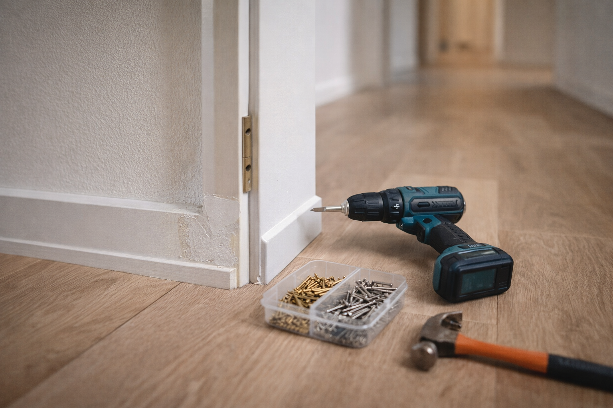
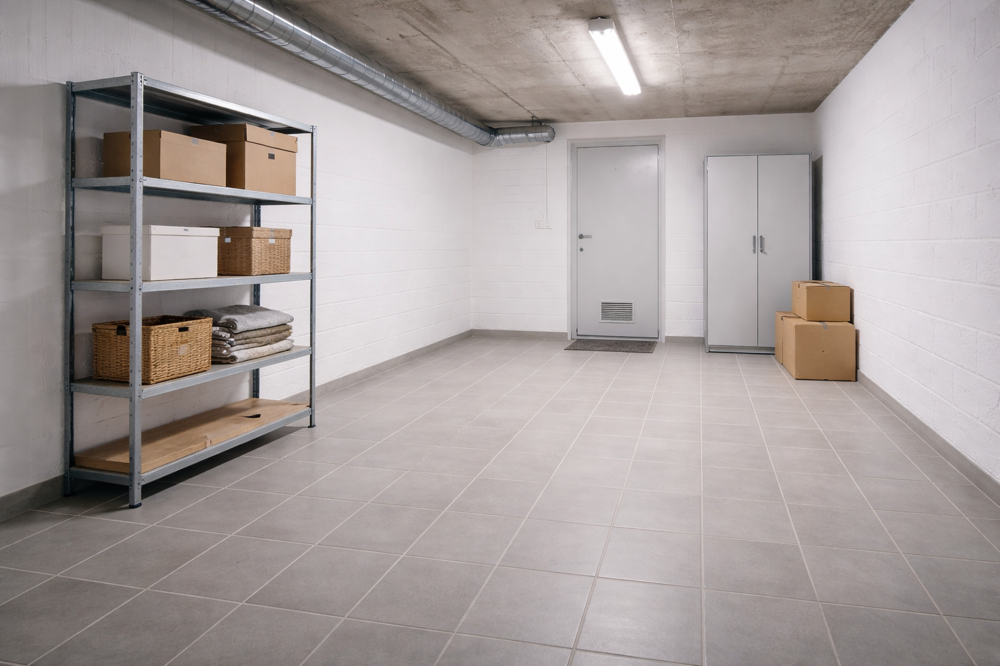

Hausmeisterdienste & Objektbetreuung
Laufende Betreuung und Kontrolle Ihrer Immobilie aus einer Hand.
Hausmeisterservice in Ihrer Region
Wir halten Ihre Immobilie verlässlich in Schuss und sind bei Anliegen schnell erreichbar.
Praktische Leistungen für den laufenden Betrieb Ihrer Immobilie aus einer Hand.
Laufende Betreuung und Kontrolle Ihrer Immobilie aus einer Hand.
Pflege von Grünflächen, Beeten und Außenanlagen.

Schnelle Hilfe bei kleinen Defekten und Schäden.
Ordnung und Sicherheit rund ums Haus.
Aufbau und Montage von Möbeln aller Art.

Ordentliche und diskrete Entrümpelungen.
Unterstützung bei kleinen und größeren Umzügen.
Schnelle Hilfe, wenn es darauf ankommt.
Ein Service, auf den Sie zählen können.
Wir sind immer für Sie da.
Wir betreün Wohn- und Gewerbeimmobilien mit klaren Prozessen, verbindlicher Kommunikation und einem festen Blick für den Alltag vor Ort.
Unser Anspruch ist eine ruhige, verlässliche Zusammenarbeit, die Eigentümer und Bewohner spürbar entlastet.
2013-2016/17
Ausbildung zum Anlagenmechaniker SHK (3 1/2 Jahre)
Einstieg ins Handwerk mit viel Praxis im Alltag. Abschluss mit Gesellenbrief als Installateur (SHK).
Danach
Kundendiensttechniker SHK (mehrere Jahre)
Mehrjährige Tätigkeit in Service, Wartung und Instandhaltung mit direktem Kundenkontakt. Parallel dazu erfolgreich abgeschlossene Techniker-Weiterbildung.
Heute
Selbstständig als Hausmeister / Objektbetreuung
Ganzheitliche Betreuung von Immobilien mit Reparaturen, Wartung, Objektkontrollen und verlässlichem Kundenservice aus einer Hand.
Qualifikation & Anspruch: Ich arbeite als Handwerker aus Leidenschaft - ruhig, sauber, zuverlässig und immer mit fachgerechter Ausführung.
So starten wir die Zusammenarbeit in klaren, übersichtlichen Schritten.
01
Sie senden uns die wichtigsten Eckdaten zu Objekt und gewünschtem Umfang.
02
Bei Bedarf sehen wir uns das Objekt vor Ort an und klären offene Details.
03
Sie erhalten ein nachvollziehbares Angebot mit klar definierten Leistungen.
04
Nach Freigabe starten wir termingerecht mit einem festen Ansprechpartner.
Kurze Antworten auf häufige Fragen rund um unsere Betreuung.
Wir betreuen aktuell [Region] und das direkte Umland nach individueller Absprache.
Ja, wir arbeiten sowohl mit festen Intervallen als auch mit einzeln beauftragten Leistungen.
In der Regel innerhalb von 24 bis 48 Stunden nach Erstkontakt und Klärung der Eckdaten.
Ja, Sie haben einen festen Kontakt, der Rückfragen und laufende Abstimmungen koordiniert.
Kleinere Instandsetzungen erledigen wir direkt, umfangreichere Arbeiten koordinieren wir mit Fachfirmen.
Ja, eine kurze Besichtigung ist nach Terminabsprache möglich und für die Planung oft sinnvoll.
Ja, wir stellen den Leistungsumfang passend zu Objektgröße, Nutzung und Intervallen zusammen.
Am schnellsten über das Kontaktformular oder telefonisch während unserer Erreichbarkeitszeiten.